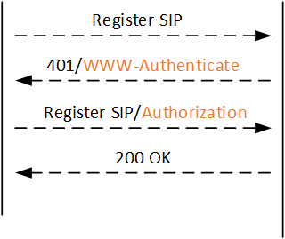
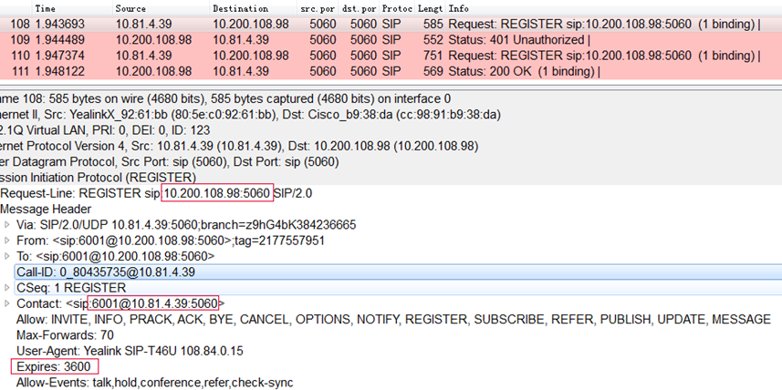
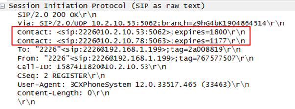
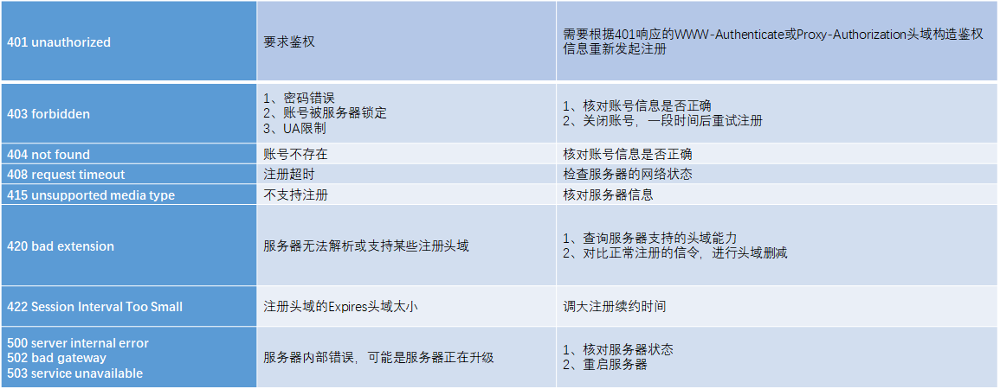
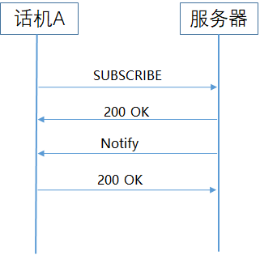
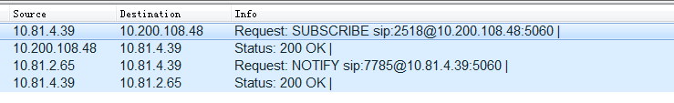
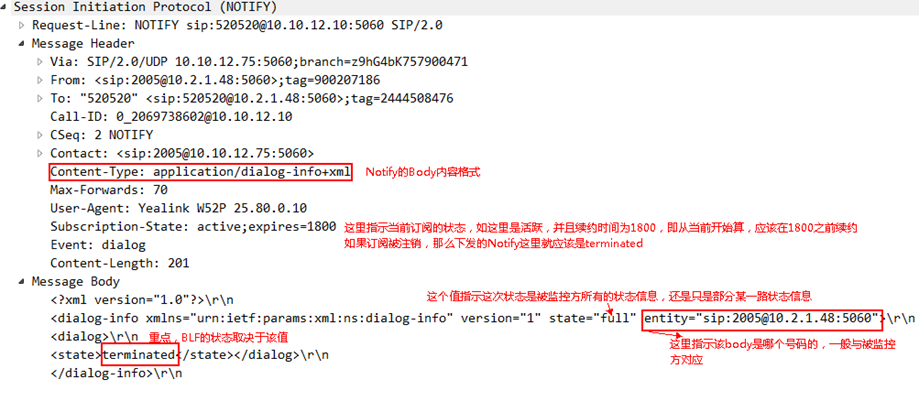

SIP主要应用场景包括：注册、订阅、通话等。
注册
注册消息关键头域：
- Request-Line：请求起始行；REGISTER请求消息，指明了要向哪个服务器进行注册
- Call-ID：该字段唯一标识一个特定的邀请，全局唯一
- Contact：指明用户可达位置，表示终端当前的IP地址和注册号码
- Expires：表示该注册生存期为3600s（注册周期）


当注册信息变更时，终端会执行注销操作，等注销完之后，会执行账号重载。 因此，可以通过变更任一注册信息来完成重新注册过程（比如Expires)。日常业务中，可以通过该方式来捕获注册报文，不需要关闭账号再重新开启。
注册续约
话机账号都有一定的生存周期(即注册周期)，当达到该时间后，话机账号需要重新给服务器发续约请求，保证能正确拥有该账号的使用权。
假设：
1.话机账号给服务器发送续约请求时，没收到服务器的响应，则话机认为服务器故障，触发掉线状态，让使用者知道当前账号故障
2.同理，服务器如果长时间未收到话机账号的续约请求，则认为终端故障或者注销，服务器会显示账号离线状态
续约机制（重点）：
- 当Expires大于1200：话机续约时间 = expires – 600
- 当Expires大于30小于1200：话机续约时间 = expires/2
Expires值先从服务器响应的200OK的Expires头域获取，如果没有则从Contact头域的expires参数获取。如果都没有，那就以终端注册的Expires头域值为准
续约请求和注册请求属于同一个对话，当出现200ok中携带多个Contact的情况时SIP会对URI中的host进行匹配获取对应的值：

注册保活
即Keep-Alive，其主要作用：
1.维持NAT中的映射表
- 使用NAT 的场景话机处于内网服务器处于外网，话机向外发包的时候NAT会为话机分配一个外网地址和端口。这个内外网地址和端口的绑定是有存活时间的，一定时间内没有使用就会被删除，一旦被删除外网的服务器发送的请求就无法被转发到内网的话机。所以需要话机定时发送keepalive数据包来维持绑定，因为只要求发出数据包即可（包内容可以随意），为了减小服务器的负载一般使用default类型的keepalive即可
2.告知服务器话机还存活
- Notify和Option类型的keepalive主要是一些客户要求，他们的服务器需要定时接收SIP包来判断话机是否存活。当然还有些客户则要求通过keepalive来让话机判断服务器是否存活来进行备份服务器的切换操作。因为这两中类型keepalive需要应用层来处理所以会加大服务器的负载
目前，话机支持的保活方式：
配置值：
Disable：不发包；
Default：发送一个普通的udp包（0d0a0d0a）；
Option：发送Option消息给注册服务器；
Notify：发送Notify消息给注册服务器。
问：为什么不用注册保活替代注册续约？
答：一般注册续约需要涉及写数据库（例如YMS服务器），对于服务器负载较大，而注册保活是链路上的保活，只涉及网络流量。
注册常见错误
注册失败问题可以根据服务器返回的错误码即可辨别（望文知意），常见的错误包括：

SIP订阅
订阅网络中某些资源或呼叫的状态信息，当那些被订阅的资源的状态发生改变时，负责这一资源的网络实体将向订阅者发送通告，通报当前资源状态的变化情况。
通常一个订阅事件包括：SUBSCRIBE和Notify：
SUBSCRIBE方法用于发起订阅请求；
NOTIFY方法用于通告当前资源状态。
话机常见的订阅事件包括：BLF/Blf-List、注册订阅、语音消息订阅等。


Event：事件类型，比如dialog、presence、message-summary、reg等；
Accept：表明订阅者支持用可扩展标识语言(XML)描述的对话事件包，比如：Accept: application/dialog-info+xml。
BLF/BLF List
BLF即Busy Lamp Field，该功能使终端具备监控其他账号状态，同时可以通过可编程按键实现快速拨号、截答功能。通过信号灯的亮、灭、闪、颜色等来反映被监控账号所处的状态，包括空闲、呼出回铃、来电、通话等状态。
BLF List是用一组可编程按键订阅SIP服务器上某个群组中各账号状态的功能。与BLF的区别为，BLF List中每个可编程按键订阅哪个账号是由服务器配置的，无需使用者手动配置。
SUBSCRIBE ：订阅消息
BLF订阅事件有两种：
1.Event: dialog
dialog类型是监控一个终端中由invite初始化的对话状态，通常携带early（来电）、confirmed（通话）、terminated（空闲）状态。
2.Event:
presence presence类型是监控一个终端与其他终端的之间的交流，只有offline和online两种状态。Notify：通告消息
Body格式不一样，BLF是带单个被监控方信息xml，BLF-List是带多个被监控方信息，中间以分隔符隔开的xml。
BLF订阅请求后服务器返回的通告数据：

BLF List订阅请求后服务器返回的通告数据：


BLF常见问题
BLF常见问题是灯状态不对
1.首先检查是否成功订阅，如果订阅失败，看服务器返回的Response，如果是403/400/489，可能是服务器不支持，要对比正常抓包；
2.然后看是否有收到Notify，如果没有收到，那么有没有可能服务器发了但是没收到，如分片问题，可以用TCP试试（抓服务器的包确认服务器有没有发）；
3.有Notify，但是状态不对，那么就是检查xml body，看状态是否正常。